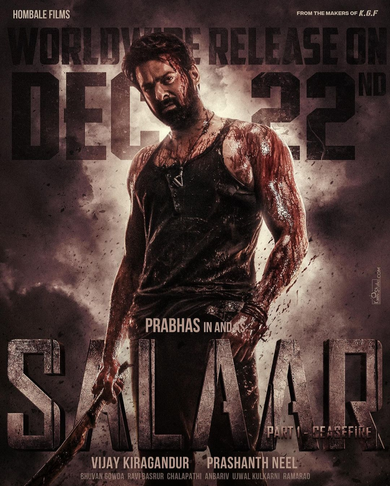

PORTFOLIO

PRABHAS
D.O.B 23.10.1979
STARDOM
Prabhas, born Uppalapati Venkata Suryanarayana Prabhas Raju, is an Indian actor who predominantly works in Telugu cinema. His stardom has transcended boundaries, and he has expanded his horizons beyond Tollywood.
Prabhas made his acting debut with the 2002 Telugu drama “Eeswar”.
His early movies, such as “Eeshwar” and “Raghavendra”, did not fare exceptionally well at the box office.
Baahubali Saga:
In 2015, Prabhas portrayed the title role in S. S. Rajamouli’s epic action drama “Baahubali: The Beginning”.
The film became the thirteenth-highest-grossing Indian film to date.
Prabhas reprised his role in the sequel, “Baahubali 2: The Conclusion” (2017), which achieved international recognition.
It became the first Indian film ever to gross over ₹1,000 crore (US$155 million) in all languages in just ten days.
CARRERS
“Baahubali 2” became the first Indian film to gross over ₹1,000 crore (US$155 million) in just ten days.
He won the Nandi Award for Best Actor for his performance in “Mirchi”.
SKILLS
Prabhas is one of the highest-paid actors in Indian cinema.
He also earns from brand endorsements, with a per brand fee of ₹2 crore.
His per movie fee is a staggering ₹100 crore.
UPCOMING PROJECTS
Salaar: This action-thriller, directed by Prashanth Neel, is shot simultaneously in both Kannada and Telugu languages
The film is directed by Nag Ashwin and stars Prabhas, Deepika Padukone, Amitabh Bachchan, Kamal Haasan, and Disha Patani. The film is made on a budget of ₹600 crore (US$75 million), making it the most expensive Indian film ever made